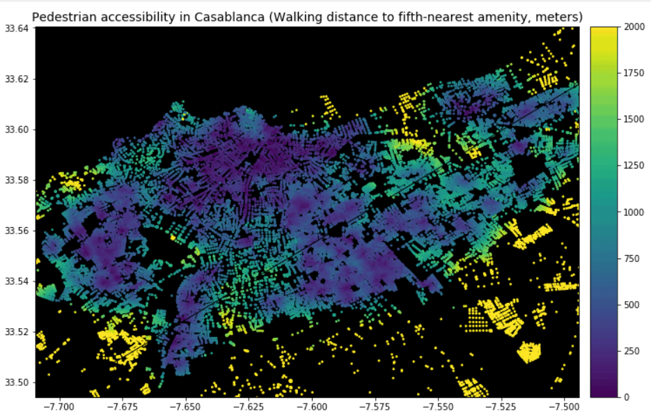

Project 1
Use GIS to analyze and map proximity of health facilities and develop strategies for quick patients access to facilities
example of map showing distance to closet amenities
 .Project 2
Use GIS to analyze and map water resources and develop strategies for sustainable management and conservation..